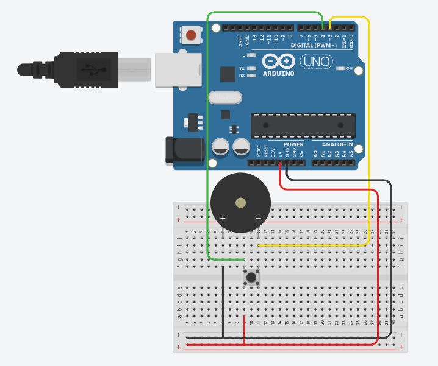

IOT Virtual Lab
Interfacing of Buzzer with Arduino:

ARDUINO CODE
int buz = 3; // Buzzer is connected on Pin No. 3 int but = 4; // Push Button is connected on Pin No. 4 int val; void setup( ) { pinMode(buz, OUTPUT); // Buzzer mode is OUTPUT. pinMode(but, INPUT); // Push Button mode is INPUT. } void loop() { val = digitalRead (but); // Reads the value from Push Button whether it is pressed or not. if (val == LOW) { digitalWrite(buz,HIGH); // Buzzer is turned ON. } else { digitalWrite(buz,LOW); // Buzzer is turned OFF. } }
Start Simulation
Click the pushbutton!